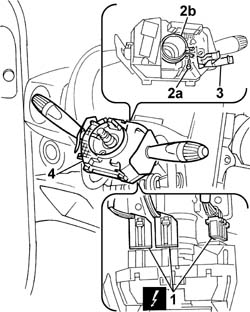

5550A10 stalk unit assembly - r+r
- Path
- Procedures > 55 ELECTRICAL EQUIPMENT > 5550 MANOEUVRING AND WARNING SIGNALS > 5550A stalk unit > 5550A10 stalk unit assembly - r+r
- Kind
- repair procedure (removal / refitting; the operation number is the code)
- Applies to
- all engines; all production periods
- Interactive page
- https://sloeber94.github.io/elrnDB-fDbl/en/#/2584947
Applies to: all engines; all production periods
 Removing
Removing
 Refitting
RefittingDisconnect the battery negative terminal.
Op. 4110A10 STEERING WHEEL - R+R FOR REPLACEMENT OR CHECKS
Op. 7040A26 STEERING COLUMN TRIM - R+R
1. Disconnect the electrical connections for the stalk unit.
 | Name | Connector |
|---|---|---|
1 | Stalk unit |
2. Slacken the bolt (2a) on the collar (2b), which secures the stalk unit to the steering column.
3. Open the retaining band and move the wiring loom aside.
4. Remove the stalk unit from the steering column.

Applies to: all engines; all production periods
Refitting
RemovingFit the stalk unit to the steering column and tighten the collar fixing bolt.
Secure the electrical wiring to the retaining band.
Connect the electrical connectors for the stalk unit.
| Name | Connector |
|---|---|---|
- | Stalk unit |
Op. 7040A26 STEERING COLUMN TRIM - R+R
Op. 4110A10 STEERING WHEEL - R+R FOR REPLACEMENT OR CHECKS
Connect the battery negative terminal.
Topics linked from this page (3)
- 4110A10 steering wheel - r+r for replacement or checks
- 7040A26 steering column trim - r+r
- H005 STEERING COLUMN SWITCH UNIT